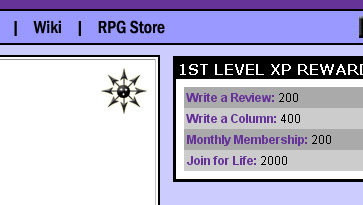

|
Encouraging User Creativityby Shannon Appelcline One of my favorite topics in this column has been the idea of user content. You can find some of my earlier meanderings in: Trials, Triumphs & Trivialities #29, The Dynamic Dilemma, Part Three; Trials, Triumphs & Trivialities #67, Creativity & The Online Gamer; and Trials, Triumphs & Trivialities #163, Social Software & Gaming: User Content. Also of relevant is the series that Christopher & I wrote on "collective choice", which you can find summarized in Trials, Triumphs & Trivialities #183, Ratings, Rankings, Reputations & Games. I think I've hit the basics of the concept pretty well. In short:
However what I only mentioned in passing thus far was how to encourage user content, which is what I'm going to cover this week, via a current RPGnet release. The RPGnet XP SystemThis week we instituted the "XP", or experience system, over at RPGnet. The basic idea is to reward people who contribute content to the site. We're currently rewarding reviews, columns, and memberships, which are all types of content that we've had at RPGnet for quite a while. We'll soon be rewarding a new type of "database entry", which will be a whole new user-content-driven part of the site (and actually was the genesis of the XP system). As it stands, the RPGnet XP system meets several of my criteria for a useful and interesting reward system, namely:
In themselves, the XPs and levels would probably be enough to carry the system. People love acclaim, and they love being recognized for the contributions they make. My wife, who doesn't even use RPGnet, comments that she'd like to write reviews now, just because the leveling system sounds fun. However I think a reward system like this is more enticing and interesting to users if there are some more tangible rewards. So, as noted, we're going to let users collect skills as they increase in levels. Some of these skills will be purely thematic, like a "sword" skill, but others will give minor privileges on the boards. Problems & SolutionsAny system like this is going to have some problems. I was most surprised to see a very small percentage of RPGnet users who entirely hated the system. Most were users who hadn't contributed any tangible content to the site. I'm very happy to have them, as every reader or quiet member of a community is valuable, but at the same time I don't understand the dislike for more tangible contributors being rewarded for their efforts. (I think a lot of it comes from a deeply ingrained reactionary attitude which I see whenever I make any change to a well-loved community. People hate change, even on a supposedly progressive medium like the Internet.) Another problem with a system like this is figuring out how much time to invest in creating rewards. BoardGameGeek, another system which has similar rewards, limits their rewards to just a couple: avatars and a few types of titles. I'm planning to offer quite a few more on RPGnet, but by dividing them between "themed" and "real" rewards, and by creating different levels of "real" rewards, I think I can still keep the time required to create them fairly realistic. One last problem that arises in a system like this is figuring out how to reward less objective content. It's easy enough to say "someone posted a review", but it's a lot harder to say "someone wrote a good forum post". As a result that's not going to be any subjective rewards in the first iteration of our XP system. I've considered some possibilities, including a slashdot-like random mod system which allows users to occasionally give out XPs, but anything like that is going to be in the future. As a basic rule, I'd say: KISS. Keep it simple (stupid). By laying out a more basic system, we can see how it works, and what people like, and build from there. ConclusionI think the RPGnet XP system is going to be a pretty good model for encouraging user content, built upon a good basis that already exists for moderating and publishing that content, but if I meet with any surprises, I'll talk about them here. [ <— #190: Online Games & The Law, Part Six: The DMCA | #192: Managing User Creativity, Part One —> ] |